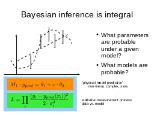
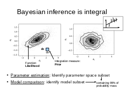
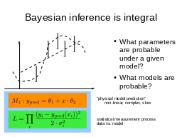
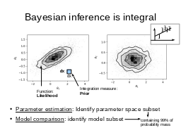
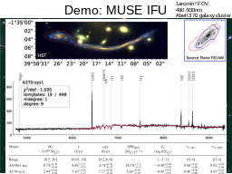
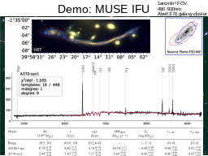
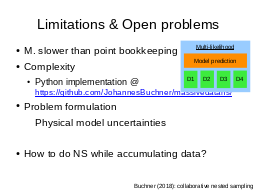
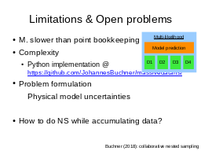

(back to all presentations)Table of contents |
Author: Johannes Buchner Homepage: http://astrost.at/istics/ Further information: Collaborative Nested Sampling Big Data vs physical modelsAbstract: The data torrent unleashed by current and upcoming astronomical surveys demands scalable analysis methods. Machine learning approaches scale well. However, separating the instrument measurement from the physical effects of interest, dealing with variable errors, and deriving parameter uncertainties is usually an after-thought. Classic forward-folding analyses with Markov Chain Monte Carlo or Nested Sampling enable parameter estimation and model comparison, even for complex and slow-to-evaluate physical models. However, these approaches require independent runs for each data set, implying an unfeasible number of model evaluations in the Big Data regime. Here I present a new algorithm, collaborative nested sampling, for deriving parameter probability distributions for each observation. Importantly, the number of physical model evaluations scales sub-linearly with the number of data sets, and no assumptions about homogeneous errors, Gaussianity, the form of the model or heterogeneity/completeness of the observations need to be made. Collaborative nested sampling has application in speeding up analyses of large surveys, integral-field-unit observations, and Monte Carlo simulations.  





 


 

|